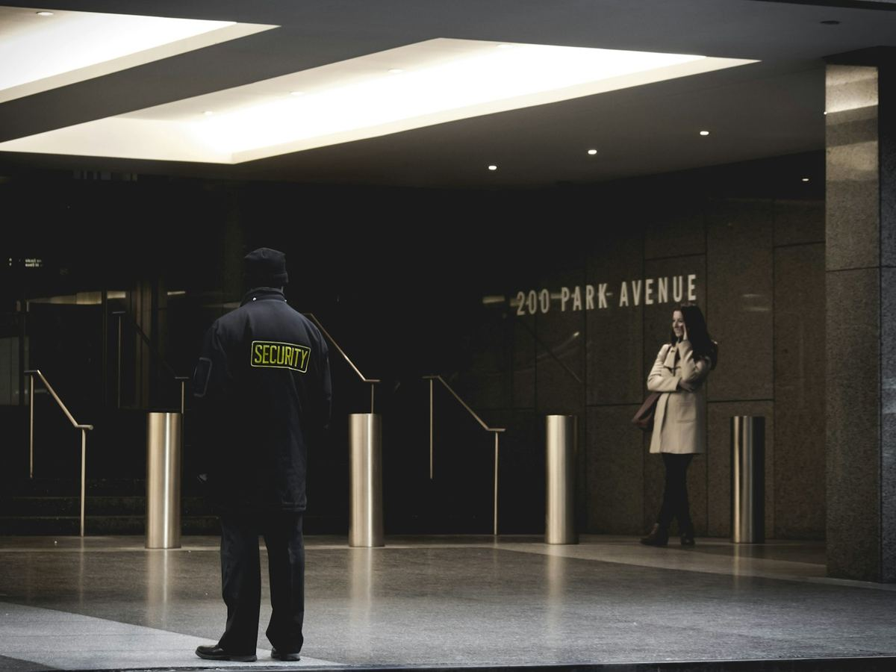

01 / 09
Security & manpower
Badged, trained security and facility officers for sites and events.
- Technically sound security and facility management officers, executives, ushers and marshals
- Specialised duty guards for mega office events
- Trained marshals for AGMs and VVIP visits
- All personnel duly approved and badged by COPS management
- Free on-site security and facility management survey before deployment